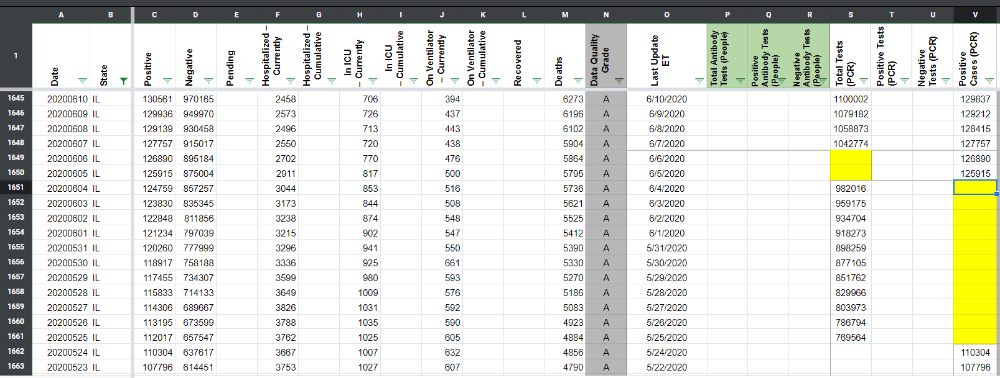
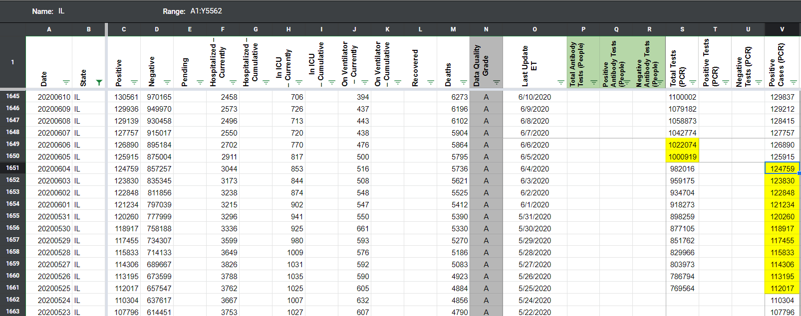
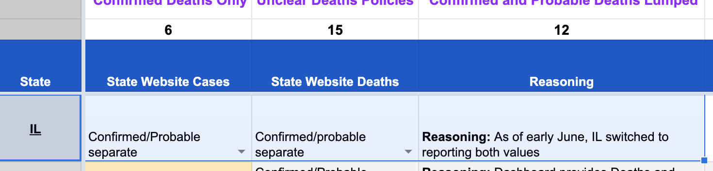

[IL] PCL Cases Historicals
Issue number 598
pscsharon opened this issue on July 10, 2020 at 7:51 am
Labels PCL/SVP Historicals Backfill
Issue: Our coverage IL has a gap in Positive Cases (PCR) between 6/04 and 5/25, although confirmed cases were being reported during that time. There is also a two day gap between 6/5-6/6 in Total Tests (PCR)
Data source: IL state dashboard charts
Link to data source http://www.dph.illinois.gov/topics-services/diseases-and-conditions/diseases-a-z-list/coronavirus
The data for this bar chart
It’s a CSV file with TXT extension so GitHub agrees to upload it as is, without zipping.
date_totalTested_confirmedCases_deaths_20200712.txt
Using the above CSV file
BEFORE:

AFTER: 
Note that our research found IL only started separating confirmed and probable in June. The bar chart now displayed by IL for historical cases (when hovering over each bar) is likely only confirmed, but we may need to check.
